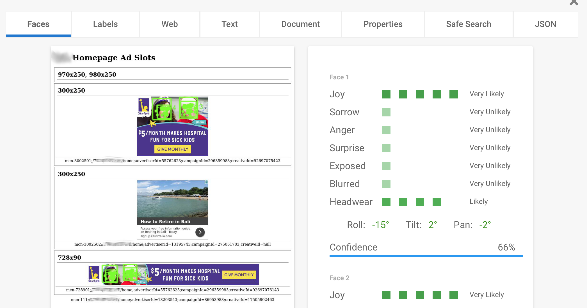
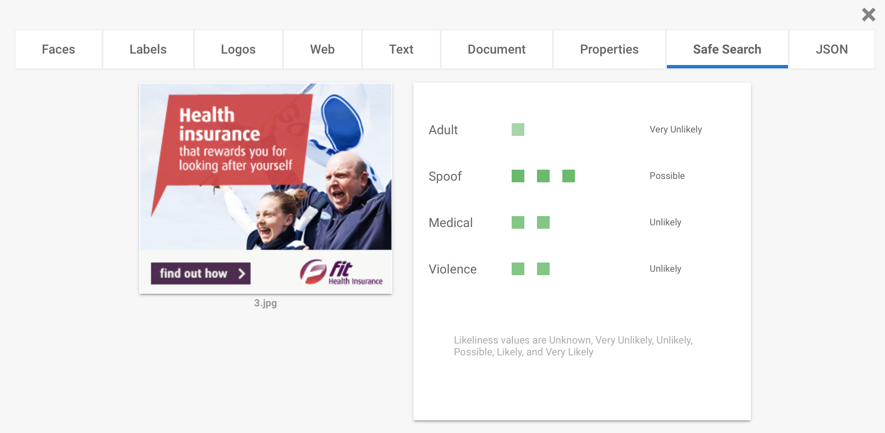
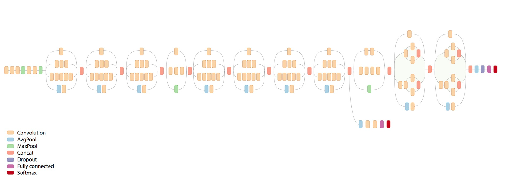

Image Recognition For Non-Experts
YOW! Data
19 Sept 2017
Gareth Jones - @nomiddlename
Serving Ads
Ad Breaches
Now
Proof Of Concept
Google Cloud Vision
- Managed service
- OCR, Logo detection
- Objects, faces, landmarks
- Inappropriate content
HTTP Request
Example Screenshot
HTTP Response
{
"faceAnnotations": [
{
"boundingPoly": {
"vertices": [
{
"x": 307,
"y": 921
},
{
"x": 364,
"y": 921
},
...
Face Detection

Inappropriate Content

OCR

Keywords
Cloud Vision Advantages
Cloud Vision Disadvantages
- Cost
- Not flexible
- Can't be used offline
POC Problems
Solution
Train our own image classifier!
Too Hard
It'll take weeks and millions of images
Steal* Someone Else's Work!
*Make use of work freely given for the advancement of humanity
Tensorflow
Inception V3

Simpler Diagram
Accuracy
Images
Images
- Sports - 170
- Not Sports - 230
Do the thing
- Took about 10 minutes
- Accuracy = 76.1%
Results
sports = 0.96
not-sports = 0.03
sports = 0.93
not-sports = 0.07
sports = 0.45
not-sports = 0.55
sports = 0.03
not-sports = 0.97
Some sort of conclusion